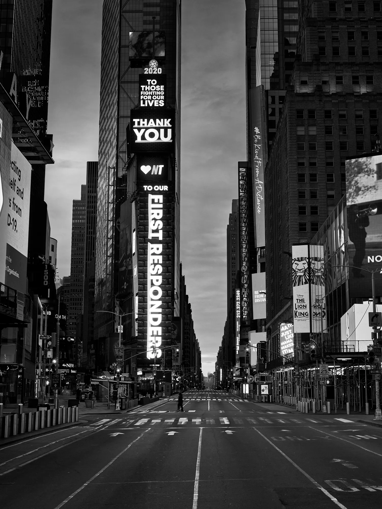
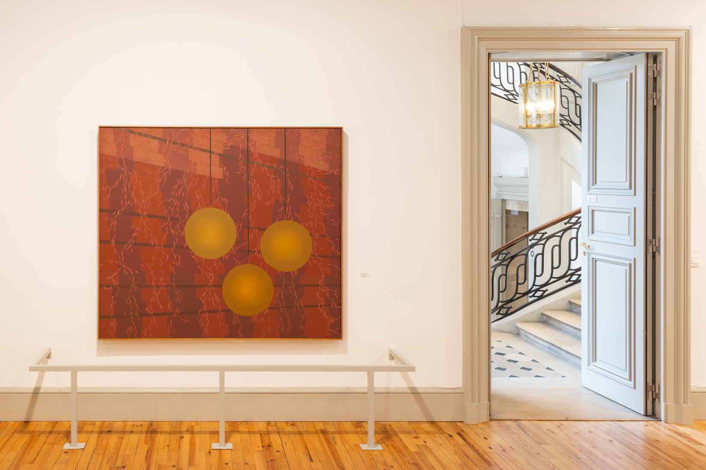
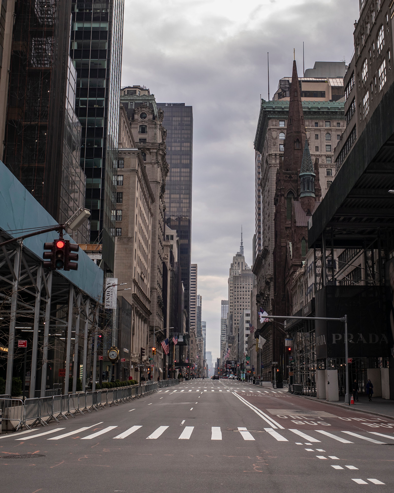

█ █ █ ██ █ █ ███ ████ ███ ██ █ █ █ ███
█ █ █ █ █ ██ █ █ █ █ █ █ █ █ ██ █ █
█ █ █ █ ███ █ █ █ █ █ ███ ███ █ █ █ █ █ █ ██
██ ██ █ █ █ ██ █ █ █ █ █ █ █ █ ██ █ █
█ █ █ █ █ █ ███ ████ █ █ ██ █ █ █ ███
███ █ █ ███ ██ █ █ ██ █ █ ████
█ █ █ █ █ █ █ █ █ █ ██ █ █
█ ███ ███ ███ █ █ ███ ██ █ █ ███
█ █ █ █ █ █ ██ █ █ █ ██ █
█ █ █ ███ █ █ █ █ █ █ █ █
███ ██ ███ ██ ███
█ █ █ █ █ █ █ █
█ ██ ███ ███ █ █ ███
█ █ █ █ █ █ █ █ █
███ █ █ █ █ ██ ███
BARBRO ÖSTLIHN IN NEW YORK
First Steps Toward a Monograph
Texts (in chronological published order):
First Steps 1 January 2027
Interview with Barbro Östlihn by Julie Martin 1 January 2027
Second Steps 1 January 2027


Barbo Östlihns Pawn-Shop at the Instiut suédois, Paris, 2025. Photo: Luca Lomazzi (Voyez-vous)
FIRST STEPS – 1 January 2027
While teaching a doctoral internat at Konstfack we discussed the temporal qualities of publishing. Is publishing something that happens at the end of a project? A culmination? Or is publishing something that happens continuously? Small steps along the way. From the perspective of a freelance graphic designer intangled in all sorts of cultural production it’s easy to identify that the most crucial quality of work is to keep going. To stick it out. To keep moving through often hostile terrains. The project is supported by IASPIS.
A painting is not a picture of an experience. It is an experience.
Positioned between the American and European avant-gardes, Barbro Östlihn developed a distinctive painterly practice outside established movements. She arrived in New York in 1961 with her husband, Öyvind Fahlström1, moving into Robert Rauschenberg’s former loft in Lower Manhattan. Fascinated by the city’s architecture and constant construction, Östlihn created works on the margins of Pop Art, photographing façades by day and painting them by night. Throughout the 1960s, she exhibited at Galerie Cordier & Ekstrom, Tibor de Nagy, and Marian Goodman, earning praise from critics such as Barbara Rose and Donald Judd.
- This is the footnote text.
Although retrospectives have begun to bring her work wider recognition, no comprehensive monograph on her practice yet exists. I am beginning such a project in dialogue with Annika Öhrner, author of Barbro Östlihn & New York and curator of several Östlihn exhibitions, including Stockholm–New York–Paris at the Institut suédois in Paris, for which I was the exhibition designer. Although retrospectives have begun to bring her work wider recognition, no comprehensive monograph on her practice yet exists. I am beginning such a project in dialogue with Annika Öhrner, author of Barbro Östlihn & New York and curator of several Östlihn exhibitions, including Stockholm–New York–Paris at the Institut suédois in Paris, for which I was the exhibition designer. Although retrospectives have begun to bring her work wider recognition, no comprehensive monograph on her practice yet exists. I am beginning such a project in dialogue with Annika Öhrner, author of Barbro Östlihn & New York and curator of several Östlihn exhibitions, including Stockholm–New York–Paris at the Institut suédois in Paris, for which I was the exhibition designer. Although retrospectives have begun to bring her work wider recognition, no comprehensive monograph on her practice yet exists. I am beginning such a project in dialogue with Annika Öhrner, author of Barbro Östlihn & New York and curator of several Östlihn exhibitions, including Stockholm–New York–Paris at the Institut suédois in Paris, for which I was the exhibition designer. Although retrospectives have begun to bring her work wider recognition, no comprehensive monograph on her practice yet exists. I am beginning such a project in dialogue with Annika Öhrner, author of Barbro Östlihn & New York and curator of several Östlihn exhibitions, including Stockholm–New York–Paris at the Institut suédois in Paris, for which I was the exhibition designer. Although retrospectives have begun to bring her work wider recognition, no comprehensive monograph on her practice yet exists. I am beginning such a project in dialogue with Annika Öhrner, author of Barbro Östlihn & New York and curator of several Östlihn exhibitions, including Stockholm–New York–Paris at the Institut suédois in Paris, for which I was the exhibition designer. Although retrospectives have begun to bring her work wider recognition, no comprehensive monograph on her practice yet exists. I am beginning such a project in dialogue with Annika Öhrner, author of Barbro Östlihn & New York and curator of several Östlihn exhibitions, including Stockholm–New York–Paris at the Institut suédois in Paris, for which I was the exhibition designer. Although retrospectives have begun to bring her work wider recognition, no comprehensive monograph on her practice yet exists. exists. I am beginning such a project in dialogue with Annika Öhrner, author of Barbro Östlihn & New York and curator of several Östlihn exhibitions, including Stockholm–New York–Paris at the Institut suédois in Paris, for which I was the exhibition designer. Although retrospectives have begun to bring her work wider recognition, no comprehensive monograph on her practice yet exists. I am beginning such a project in dialogue with Annika Öhrner, author of Barbro Östlihn & New York and curator of several Östlihn exhibitions, including Stockholm–New York–Paris at the Institut suédois in Paris, for which I was the exhibition designer.

New York skyline, archival study.


New York skyline, archival study.
Bildtext här.
This second text block behaves exactly like the first one. It automatically creates as many columns as needed before the next image panel begins. This means you can build long editorial sequences where text, images and captions alternate naturally. Each text block calculates its own width independently.

SECOND STEPS – 1 January 2027
This second text block behaves exactly like the first one. It automatically creates as many columns as needed before the next image panel begins. This means you can build long editorial sequences where text, images and captions alternate naturally. Each text block calculates its own width independently.
Barbo Östlihns Pawn-Shop at the Instiut suédois, Paris, 2025. Photo: Luca Lomazzi (Voyez-vous)

Barbo Östlihn, Pawn-Shop, 1962